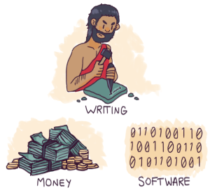

Une nouvelle technologie immatérielle
Les années 2000 ont vu naître un phénomène majeur : l’émergence d’une nouvelle technologie immatérielle. Après l’écriture et la monnaie, le logiciel est la troisième tech- nologie immatérielle à apparaître dans toute l’histoire de l’humanité. Quinze ans après notre entrée dans l’ère du logiciel, nous cherchons toujours à comprendre en quoi elle consiste. Comme le dit Marc Andreessen, le logiciel dévore le monde. C’est une première étape, mais ce n’est que le début de la compréhension du monde nouveau dans lequel nous vivons aujourd’hui.{kind=link}

Seules quelques technologies généralistes telles que l’électricité, le moteur à vapeur, le chronomètre1, l’écriture, la monnaie, la sidérurgie ou l’agriculture ont eu sur notre civilisation un impact tel qu’elles méritent l’emploi du verbe dévorer. De toutes ces technologies, deux seulement sont immatérielles : l’écriture et la monnaie. On peut dire de ces deux technologies qu’elles sont fluides : leur forme peut varier selon les contenants. De même que l’argent peut prendre la forme de tablettes de terre glaise chez les Assyriens, de pièces de monnaie, de chèques ou de cartes de crédit, le logiciel peut prendre la forme de tout matériel informatique : ordinateur, tablette, téléphone, etc. Le logiciel existe depuis longtemps mais ce n’est qu’au début des années 2000 qu’il est devenu fluide, c’est-à-dire indépendant du matériel informatique qui permet d’y accéder. Depuis lors, le logiciel a tout envahi, à un rythme effréné. Les 50 années après la Seconde Guerre mondiale ont été celles du matériel informatique. Les ordinateurs répondaient avant tout à des besoins existants : suivi de stock, gestion de paye... Les spécialistes de l’informatique prenaient le problème à l’envers : ils ne faisaient que résoudre des problèmes de l’âge industriel sans explorer l’informatique pour elle-même. C’est aux alentours de l’an 2000 (ce qui, par ailleurs, coïncide avec la crise des dot com) que s’est révélée la vraie nature du logiciel et que l’on a pris conscience de son indépendance vis-à-vis du matériel informatique. L’économie du logiciel a pris son envol au moment où l’industrie du matériel informatique était à son apogée2. Cette mutation s’est d’abord déroulée dans le domaine des technologies de l’information puis s’est étendue à tous les autres secteurs de l’économie. Mais la réalité économique de cette mutation n’est rien en regard de la véritable révolution sociétale qui en a résulté. Aujourd’hui, un adolescent de 14 ans (et donc trop jeune pour entrer dans les statistiques du travail salarié) peut tout à fait apprendre à programmer seul, contribuer de façon importante à des projets open source et même devenir un informaticien quasi- professionnel avant d’avoir atteint la majorité. « Breaking smart », c’est précisément cela : un acteur économique s’approprie rapidement une technologie émergente – en l’espèce un jeune utilise la programmation – pour exercer sur l’avenir une influence déterminante. De tout le système économique mis en œuvre, une toute petite partie seulement – un ordinateur portable et une connexion Internet – est mesurable par les indicateurs actuels. Si l’on ne considère que les impacts économiques visibles, les effets d’une telle activité pourraient même être vus comme négatifs : le logiciel réduit les coûts. Au contraire, si l’on considère les conséquences économiques de l’histoire de notre jeune programmeur, on s’aperçoit qu’il a économisé les frais de quatre années d’études universitaires coûteuses. Dans certains cas, cet effet de levier peut remettre en cause une industrie toute entière. L’industrie musicale, par exemple : Napster, un logiciel créé par Shawn Fanning alors qu’il n’avait pas encore vingt ans, a déclenché toute une série d’innovations dont l’impact le plus évident a été l’effondrement du marché du disque, entraînant les majors dans son sillage. Si l’on regarde les choses autrement, l’impact caché de cette révolution a été l’apparition d’un grand nombre de labels indépendants et un développement rapide de l’industrie du spectacle. Dire que le logiciel dévore le monde, c’est chercher à comprendre les deux faces d’une même médaille : d’un côté des effets à taille humaine, quantifiables et qui peuvent même sembler dérisoires, voire négatifs, et d’un autre côté des conséquences profondes, invisibles et positives à terme mais à côté desquelles il est facile de passer si l’on ne sait pas où chercher. Alors bien entendu, aujourd’hui tout le monde prend peu à peu conscience de l’importance de ces conséquences invisibles. Mais il y a encore quinze ans, même les spécialistes les plus chevronnés se laissaient éblouir par l’émergence du logiciel en tant que tel plutôt que par les conséquences de long terme qu’il entraînerait. Prenons un autre exemple qui est une conséquence aussi inattendue qu’imprévisible de la loi de Moore. En 1965, Gordon Moore, l’un des co-fondateurs d’Intel, étudie l’évolution des processeurs et en déduit une loi empirique : le nombre de transistors dans un processeur double tous les dix-huit mois. Aux environs de l’an 2000, alors même que les fabricants de microprocesseurs touchaient les limites de la loi de Moore, les concepteurs de puces et les fabricants d’ordinateurs ont imaginé, de leur côté, d’utiliser cette même loi de Moore non pas pour augmenter la puissance brute des matériels mais au contraire pour en réduire la consommation électrique et les coûts de fabrication. La conséquence de cette démarche n’a pas du tout été celle que l’on attendait. C’est à partir de ce moment-là que l’on a vu proliférer des myriades d’appareils peu chers et consommant peu d’énergie, notamment des smartphones qui ont agrandi la famille de ce que jusqu’alors on appelait des ordinateurs. Tout cela au moment de l’arrivée des réseaux mobiles haut débit combinée à celle des infrastructures de cloud fiables et peu chères, créant ainsi un terreau favorable à l’essor de la vie numérique. Il n’en fallait pas moins pour permettre une démocratisation sans précédent des outils informatiques, indépendamment des ressources ou du niveau d’éducation et ce partout dans le monde. L’internet des objets est une conséquence directe de cette transformation. Ce concept se fonde sur l’idée que des processeurs toujours plus petits et consommant toujours moins d’énergie pourront s’intégrer partout. Ajoutez-y une source d’énergie, des capteurs et des interrupteurs et tout peut devenir « intelligent » : des voitures aux ampoules électriques, des vêtements aux médicaments... D’après certaines études, si l’on équipait tous les objets de la Terre avec une puce et un logiciel, l’internet des objets représenterait un marché potentiel dont l’évaluation oscille entre 2.700 et 14.000 milliards de dollars, comparable au PIB américain d’aujourd’hui3. Dès 2010, il était clair que les réseaux haut débit associés à une puissance de calcul quasi-illimitée via le cloud et à des batteries plus avancées allaient démocratiser la programmation. Ce qui hier encore était l’apanage des ingénieurs et requérait un puissant ordinateur était maintenant à la portée de n’importe qui, sans équipement particulier. L’émergence des services de VTC illustre parfaitement ce phénomène. Il y a seulement quelques années, des services tels que Uber ou Lyft4 semblaient n’être rien d’autre qu’une manière pratique de commander et de payer un taxi conventionnel. Petit à petit cependant, ces services se sont substitués aux centrales d’appels des compagnies de taxis et ont rendu le métier de chauffeur plus facile d’accès. Tout cela grâce au logiciel. C’est bien la combinaison de plusieurs technologies sans rapport les unes avec les autres qui a permis à ces services de s’imposer : les données collectées par le GPS et les évaluations des chauffeurs et passagers suffisent à créer un système de confiance, sans besoin d’une marque connue ou d’une régulation préexistante. Le résultat : une démultiplication du nombre de chauffeurs offrant des services moins chers car utilisant des voitures déjà en circulation mais sous-utilisées. Alors que les services de VTC se développaient de ville en ville, est apparu un effet de second ordre : plus pratiques, ces services permettent également à des citadins de se passer totalement de voiture. Une offre élargie fait baisser les prix d’un service qui se démocratise alors et offre à un plus grand nombre une alternative à des transports en commun peu pratiques. Ainsi, à mesure que s’est répandue l’idée même de vie sans voiture, les urbanistes ont commencé à remettre en question le bon vieux concept d’expansion des zones péri-urbaines, né en partie de la généralisation de l’automobile. Et ce n’est qu’un début : en permettant de se passer de voitures, le développement des services de VTC va diminuer la demande sur le marché de l’automobile, ce qui, à son tour, peut permettre un transfert du budget que les ménages y consacrent vers d’autres dépenses de consommation. Ce qui ne semble être qu’un changement de style de vie au niveau des ménages remet tout l’écosystème de l’automobile en question : il va falloir repenser l’assurance et reconsidérer l’avenir d’un réseau routier qui sera emprunté par un nombre réduit de véhicules, eux-mêmes utilisés de manière plus efficace. Parallèlement, cette nouvelle infrastructure logicielle créée par les services de VTC transforme d’autres secteurs : les services de livraison, par exemple, qui s’appuient sur le transport et la logistique. De fil en aiguille, en validant l’utilisation de technologies innovantes, l’émergence des services de VTC prépare la prochaine révolution de l’industrie automobile : la voiture autonome. Voilà qui annonce des changements majeurs dans notre rapport à l’automobile. Pour les traditionalistes, en particulier aux Etats-Unis, on considère que la voiture a permis la création d’une véritable « civilisation de l’automobile » dans laquelle les smartphones ne sont qu’un gadget parmi d’autres. En revanche, pour les early adopters des services de VTC, c’est le smartphone qui est au centre d’un nouveau rapport au monde dont la voiture n’est qu’un accessoire parmi d’autres. Pour des générations d’Américains, la voiture fut le symbole de la liberté. Pour la prochaine génération, c’est de ne pas posséder de voiture qui sera la liberté. Et toute cette révolution dans notre rapport à deux technologies majeures – l’automobile et le smartphone – a été rendue possible par ce qui n’était, au départ, qu’une « application de plus pour smartphone ».
Des transformations comparables se déroulent les unes après les autres, secteur par secteur. Parmi les premiers touchés : l’édition, l’enseignement, la télévision, le transport aérien, le courrier et l’industrie hôtelière. Les changements vont au-delà du simple impact économique. Ce sont tous les aspects de l’organisation sociale et industrielle qui sont transformés par l’arrivée du logiciel.
Ce mouvement de transformation en profondeur s’est déjà produit deux fois au cours de l’Histoire : avec l’apparition de la monnaie et de l’écriture. Les possibilités offertes par le logiciel, cependant, sont encore plus puissantes et plus nombreuses.
L’écriture offre une grande flexibilité : on peut aussi bien écrire sur le sable avec un doigt que sur une tête d’épingle avec un faisceau d’électrons. La monnaie offre encore plus de souplesse : du sel ou poivre dans l’Antiquité jusqu’à la monnaie électronique, en passant par les cigarettes en prison, tout peut servir de monnaie d’échange. Mais le logiciel peut les dévorer toutes deux, et leur ouvrir de nouveaux champs d’application.
C’est notamment parce que l’émergence de technologies immatérielles est rare dans l’histoire de l’humanité que l’ampleur de la transformation numérique est systématiquement sous-estimée. Si le logiciel paraît omniprésent dans les médias, ce que nous en percevons demeure insignifiant comparé à ses conséquences invisibles.
Les conséquences de cette myopie généralisée sont considérables. Alors que le logiciel génère sans cesse de nouvelles opportunités, le risque est toujours plus grand de se retrouver du mauvais côté de l’Histoire. Seuls ceux qui ont pris la pleine mesure du logiciel en profiteront... les autres seront les victimes collatérales d’une révolution qu’ils n’auront pas vu venir.
Car c’est bien d’une révolution dont il s’agit : les changements induits par le logiciel ne sont ni marginaux ni temporaires. Depuis quelques années, le logiciel a déjà révolutionné des pans entiers de l’économie et ce de façon irréversible. Les individus, les entreprises, les états : pas une composante de la société qui n’y échappe. Et même les dictatures en apparence les plus féroces ne pourront y résister éternellement.
C’est pourquoi, si l’on veut prendre la pleine mesure du logiciel, on doit se demander pourquoi son importance a été systématiquement sous-évaluée... et il nous faut également ré-évaluer ce que l’avenir nous réserve.
Et toute cette révolution dans notre rapport à deux technologies majeures – l’automobile et le smartphone – a été rendue possible par ce qui n’était, au départ, qu’une « application de plus pour smartphone ».
Des transformations comparables se déroulent les unes après les autres, secteur par secteur. Parmi les premiers touchés : l’édition, l’enseignement, la télévision, le transport aérien, le courrier et l’industrie hôtelière. Les changements vont au-delà du simple impact économique. Ce sont tous les aspects de l’organisation sociale et industrielle qui sont transformés par l’arrivée du logiciel.
Ce mouvement de transformation en profondeur s’est déjà produit deux fois au cours de l’Histoire : avec l’apparition de la monnaie et de l’écriture. Les possibilités offertes par le logiciel, cependant, sont encore plus puissantes et plus nombreuses.
L’écriture offre une grande flexibilité : on peut aussi bien écrire sur le sable avec un doigt que sur une tête d’épingle avec un faisceau d’électrons. La monnaie offre encore plus de souplesse : du sel ou poivre dans l’Antiquité jusqu’à la monnaie électronique, en passant par les cigarettes en prison, tout peut servir de monnaie d’échange. Mais le logiciel peut les dévorer toutes deux, et leur ouvrir de nouveaux champs d’application.
C’est notamment parce que l’émergence de technologies immatérielles est rare dans l’histoire de l’humanité que l’ampleur de la transformation numérique est systématiquement sous-estimée. Si le logiciel paraît omniprésent dans les médias, ce que nous en percevons demeure insignifiant comparé à ses conséquences invisibles.
Les conséquences de cette myopie généralisée sont considérables. Alors que le logiciel génère sans cesse de nouvelles opportunités, le risque est toujours plus grand de se retrouver du mauvais côté de l’Histoire. Seuls ceux qui ont pris la pleine mesure du logiciel en profiteront... les autres seront les victimes collatérales d’une révolution qu’ils n’auront pas vu venir.
Car c’est bien d’une révolution dont il s’agit : les changements induits par le logiciel ne sont ni marginaux ni temporaires. Depuis quelques années, le logiciel a déjà révolutionné des pans entiers de l’économie et ce de façon irréversible. Les individus, les entreprises, les états : pas une composante de la société qui n’y échappe. Et même les dictatures en apparence les plus féroces ne pourront y résister éternellement.
C’est pourquoi, si l’on veut prendre la pleine mesure du logiciel, on doit se demander pourquoi son importance a été systématiquement sous-évaluée... et il nous faut également ré-évaluer ce que l’avenir nous réserve.
[1] Pris ici dans sa définition horlogère de montre de précision (ndt). [2] On peut estimer qu’entre 1977 et 2012 la contribution directe du matériel informatique au PIB américain a augmenté de 14 % (passant de 1,4% en 1977 à 1,6 % en 2012) alors que celle du du logiciel a augmenté de 150 % (passant de 0,2 % en 1977 à 0,5 % en 2012). En 2000, la contribution de l’industrie informatique au PIB américain était de 2,2 % et n’a cessé de décroître depuis (source : Andreessen-Horowitz). [3] Trois études indépendantes nous ont permis de calculer notre proposition. Gartner estime que l’internet des objets représentera 1.900 milliards de dollars de valeur ajoutée d’ici 2020. Cisco pense que le marché de l’internet des objets représentera une valeur oscillant entre 14.000 et 19.000 milliards de dollars et IDC estime ce même marché à 8.900 milliards. [4] Lyft est le principal concurrent d’Uber, présent majoritairement aux USA et dont la présence internationale est faible, ce qui explique sa moindre réputation en dehors des Etats-Unis. L’entreprise a levé 1 milliard de dollars auprès de General Motors en janvier 2016 (ndt).